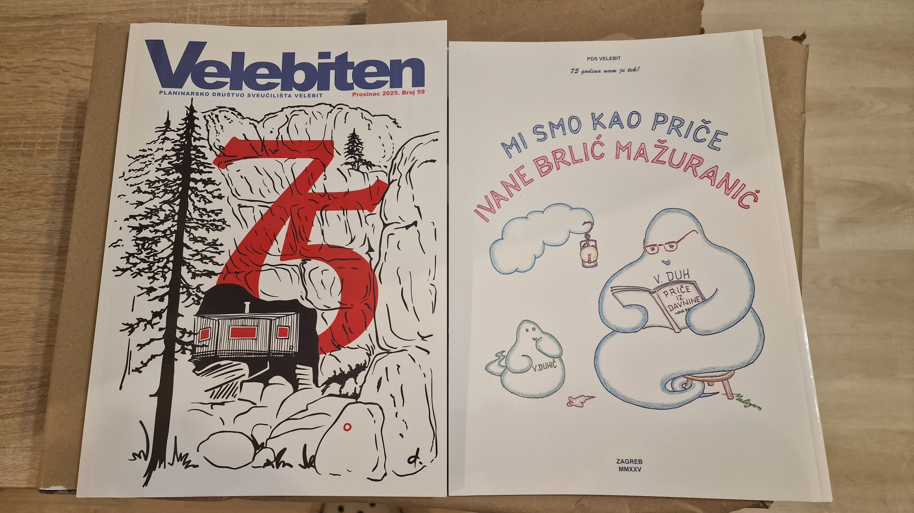

Od 1954. pod zemljom.
I na terenu, u Klaićevoj, za stolom nad nacrtom i uz opremu koju opet treba oprati. SOV čine ljudi koji istražuju, uče, crtaju, dokumentiraju i vraćaju se po još.
Speleologija nije samo spuštanje u jamu.
Speleološki odsjek Planinarskog društva Sveučilišta Velebit djeluje u Zagrebu. Organiziramo izlete, istraživanja, ekspedicije, speleoškolu, vježbe i akcije.
Na terenu prikupljamo podatke, izrađujemo nacrte i fotografiramo. Izvan terena sređujemo dokumentaciju, opremu i arhivu, jer istraživanje nema puno smisla ako se poslije ne zna što je pronađeno i tko je gdje bio.
Uz sve to, SOV je i društvo. Srijeda u Klaićevoj, dogovor za vikend, traženje još jednog mjesta u autu i rasprava čije je uže ostalo blatno.
Istražujemo
Špilje i jame, poznate objekte i nova područja. Od jednodnevnog izleta do višednevne ekspedicije.
Učimo
Speleoškola, vježbe, rad na užetu, sigurnost i prenošenje iskustva novim generacijama članova.
Bilježimo
Nacrti, koordinate, fotografije, zapisnici i terenski podaci ostaju sređeni, provjerljivi i dostupni ljudima koji dolaze poslije nas.


Pročelništvo
Ljudi koji trenutačno vode odsjek i funkcije bez kojih izleti, arhiva, oprema i svakodnevni rad brzo postanu kaos.
Sedam desetljeća terena, ekspedicija i priča.
Na ovoj stranici nije nagurana cijela povijest odsjeka. Za to postoje kronologija, popis pročelništava, Velebitaški duh i Velebiten.

Velebiten
Mjesto za tekstove koji ne stanu u kratku objavu: priče s terena, putopise, istraživanja, planine, fotografije i ljude koji čine Velebit.
Otvori Velebiten →Više od sekcije na webu.
To su teren, ekipa, odgovornost, humor i tvrdoglava ljubav prema podzemlju. Dio toga može se zapisati, a ostatak se ipak mora doživjeti.